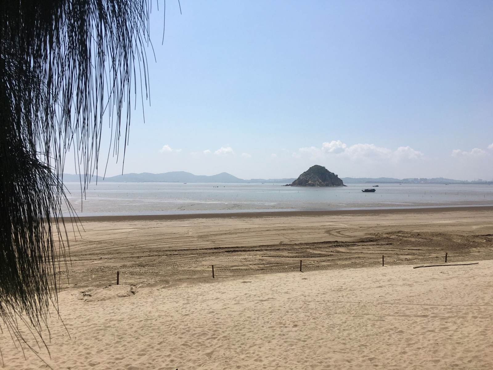
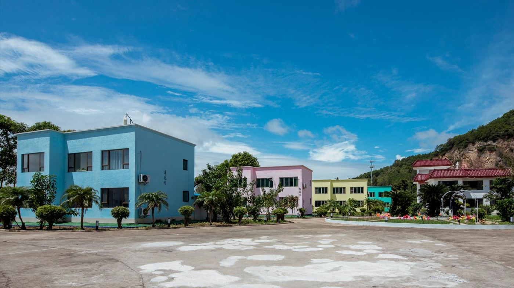
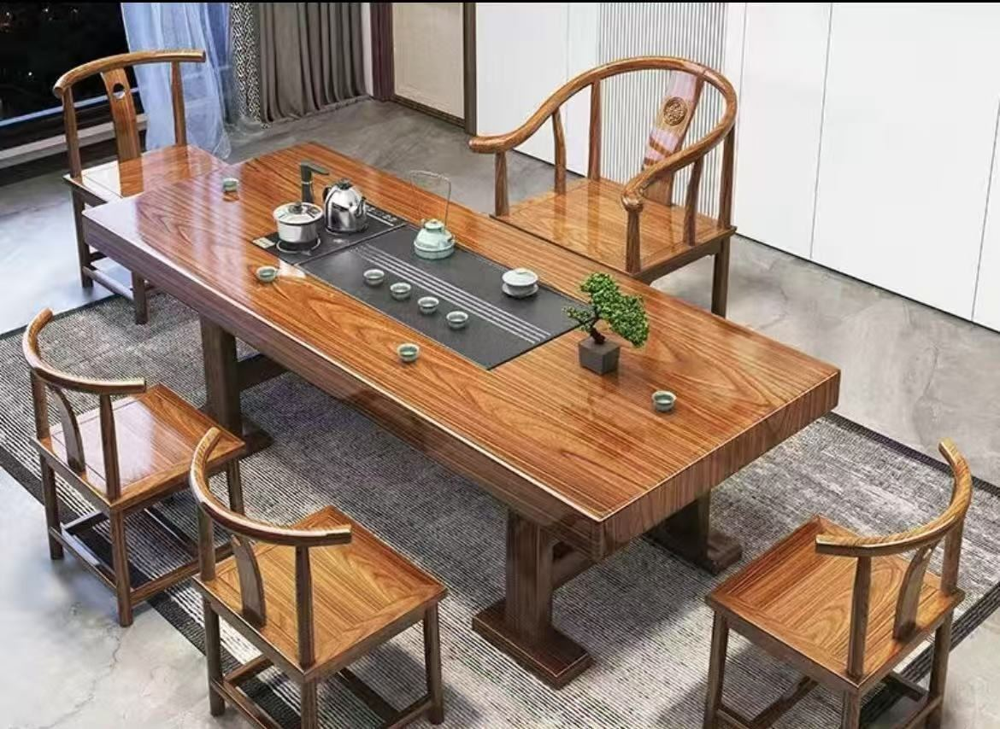

福州周末去哪：8个方向，先选山还是海
周末最累的，有时是群里讨论三小时「到底去哪」。先选玩法，再选地方：下面是 8 个备选，不是一天能串完的路线。
| 方向 | 适合 | 建议时长 | 出发前查 |
|---|---|---|---|
| 市区西禅寺 | 看古建、安静参访 | 半天 | 开放和参访规则 |
| 鼓岭 | 山间散步、老建筑 | 半天到一天 | 天气、上下山交通 |
| 琅岐龙鼓 | 海边散步、朋友度假 | 一天或两天一晚 | 潮汐、天气、住宿 |
| 连江奇达村 | 山海渔村、登高 | 一天 | 登高路线、山路交通 |
| 永泰嵩口古镇 | 古厝街巷、溪边慢逛 | 一天 | 往返交通 |
| 市区乌山 | 城市登高、散步 | 半天内 | 台阶、入口 |
| 福清大姆山 | 草场、山野 | 一天 | 景区公告、风雨 |
| 马尾闽安古镇 | 历史街巷、古桥 | 半天到一天 | 往返交通 |
想留在市区：西禅寺、乌山二选一
西禅寺适合愿意放慢脚步看古建的人，参访时保持安静；乌山适合只想加一段城市登高。带老人孩子，按台阶多少来选。
想换换山里的空气：鼓岭
天气好看山景，阴雨天就走一段路、看看老建筑。别为了「同款云海」追着天气跑，返程交通先确认。
想和朋友去海边：琅岐龙鼓沙滩
这条适合单独留一天。上午或下午上岛，按当天潮汐决定要不要赶海，其他时间散步、喝茶、聚一聚。沙滩散步不等于适合游泳，低潮也不一定在傍晚。


出发前先定好日期、人数和房型，别等大家上了车才开始分床。天气变了，也可以把聚会挪到屋里。

想走远一点：连江、永泰、福清分开安排
- 连江奇达村：山海和渔村，登高按开放情况和体力来，别为了拍照去危险的位置。
- 永泰嵩口古镇：看古厝和街巷，别和连江海边硬串成一天。
- 福清大姆山：山上风雨、道路会影响体验，看当天公告；草场上不生火、不留垃圾。
- 马尾闽安古镇：历史街巷方向的另一个选择。想和琅岐同一天去，先算好时间。
群里直接这样投票
「想爬山的选鼓岭，想看古厝的选嵩口，想一起坐着聊天的选琅岐。」先定方向，再查天气、交通和开放情况，周末就没那么难定了。
停留时长和路线是我们的建议，开放时间、票务、交通和店铺营业会变，出发前再查一下当天的信息。